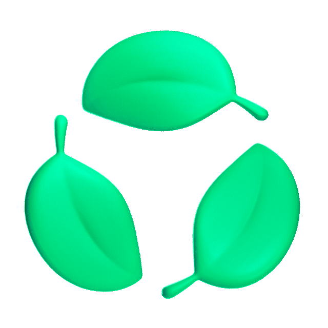
네오 액티브그린
네오와 이용자가 함께 만들어가는 지속가능한 지구
'액티브그린'은 기업의 환경 책임을 넘어 이용자와 함께 환경
문제를
해결하고자 하는 네오의 환경 이니셔티브로,
서비스와 플랫폼을 통해 이용자들의 친환경 활동 참여를 촉진하고자 합니다.
이용자 환경 기여로 만든
탄소감축량
이용자 탄소감축량을 모으면
축구장 230개에 숲을 채운 효과
이용자와 네오가 함께 모은
환경을 위한 기금
친환경 기여 활동에 참여한
이용자 수
네오를 통해 전환하기
네오T 전기택시,
전기차 총 이용거리
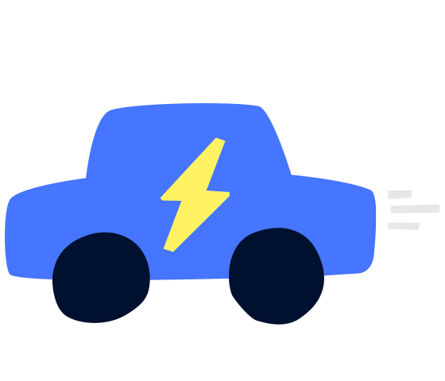
네오페이와 네오 지갑을 통한
전자문서 전환
자전거 타기
네오맵 자전거,
네오T바이크 총 이동거리
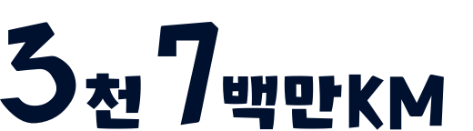
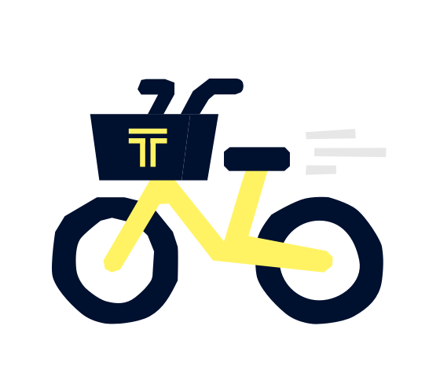
네오톡 선물하기와 네오메이커스의
그린 라벨 구매 건수
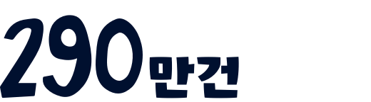
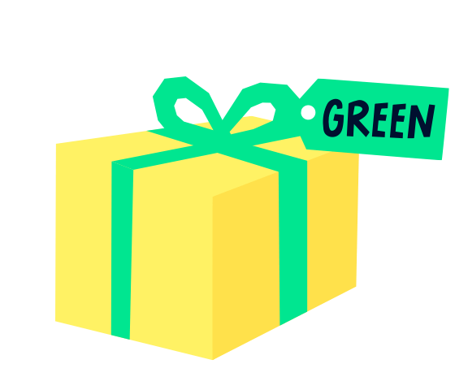
네오를 통해 순환에 참여하기
내 주변 상점 찾기
이용자들이 함께 만든 장소 검색
#일회용품없는가게
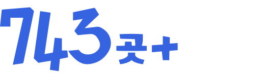
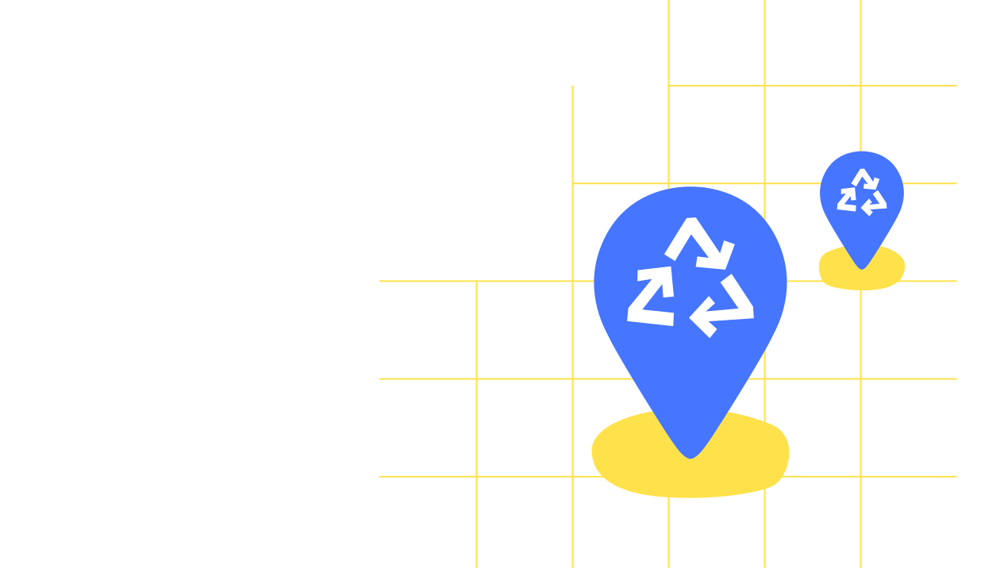
새로운 쓸모를 찾은 제품
새가버치에서
2023년 수거된 폐기물 개수
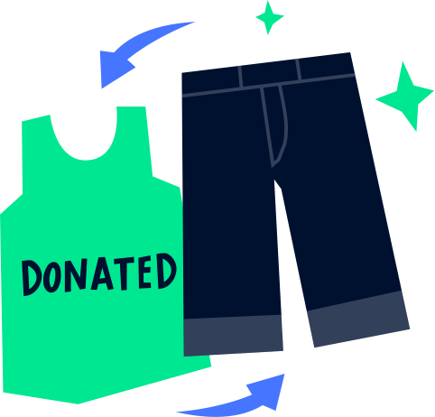
지속가능한 굿즈로
피스오브마인드(POM)의
재생원료, 친환경 공정 생산품 구매 건수
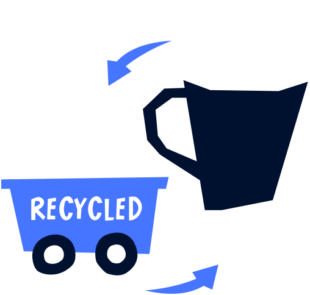
농수산물 제값하도록
제가버치로 2023년 판매된
농수축산물의 총 중량
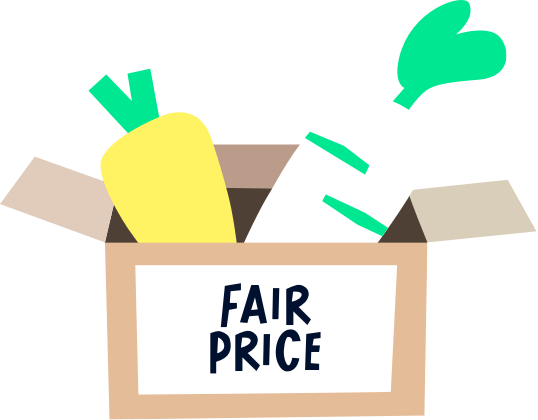
네오를 통해 그린 디지털 설정하기
공유 버튼 이용하기
데이터 추가 소비 제로
다크모드 설정
에너지 사용 절감 효과
전자청구서 설정
종이 사용 및 발송 비용 제로

에코모드 설정
7일 후 휴지통 자동 비우기
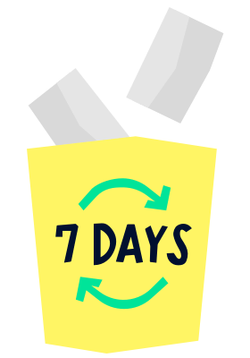
특학생증 발급받기
분실 걱정 없는 디지털카드
네오와 함께 자연보존에 나서기
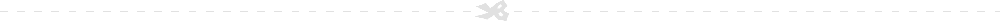
네오 안에서의 환경 경영노력
네오는 경영 전반에 걸쳐 환경 영향을 최소화하기 위한 활동을 지속하고,
2040 넷제로(Net Zero)를 목표로
노력하고
있습니다.